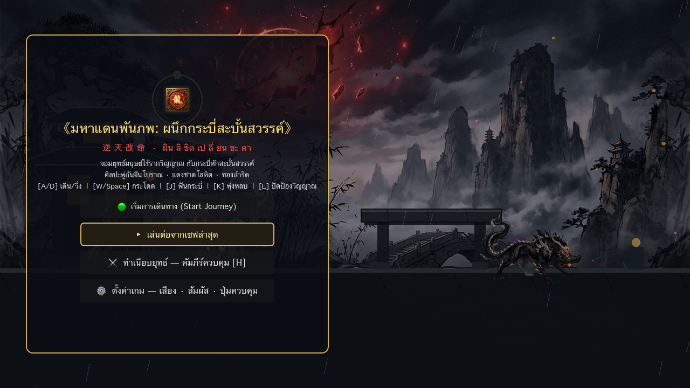
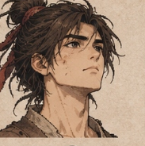
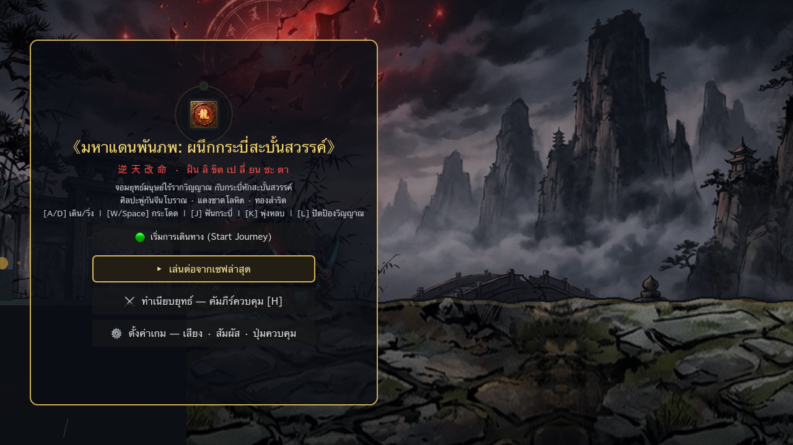
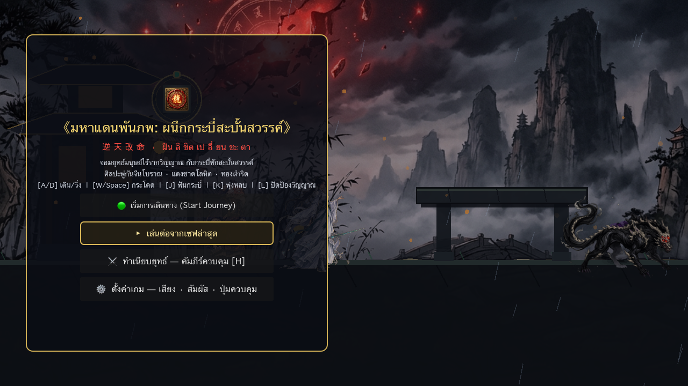
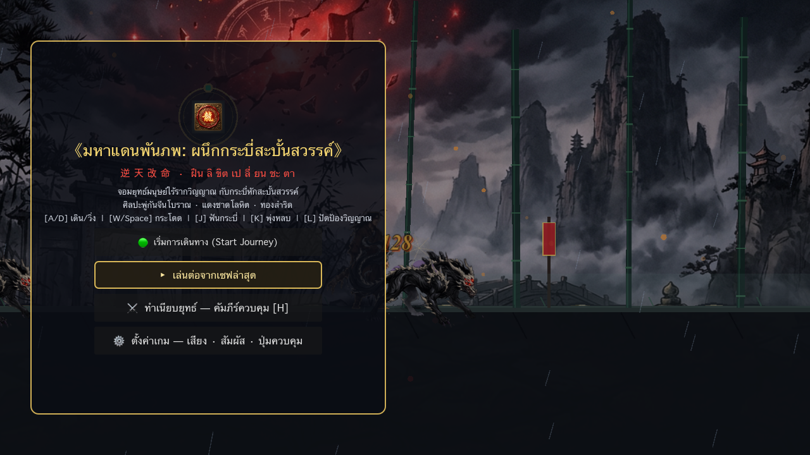
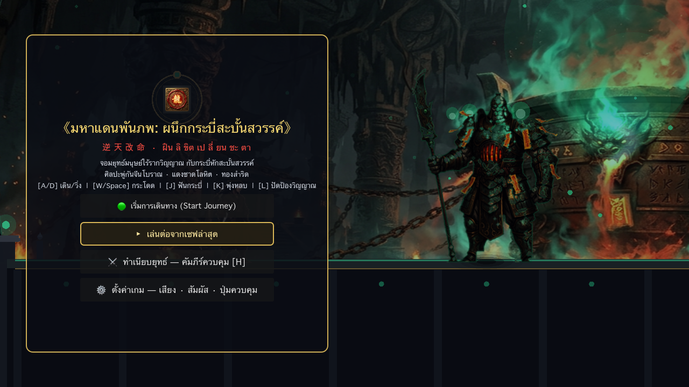
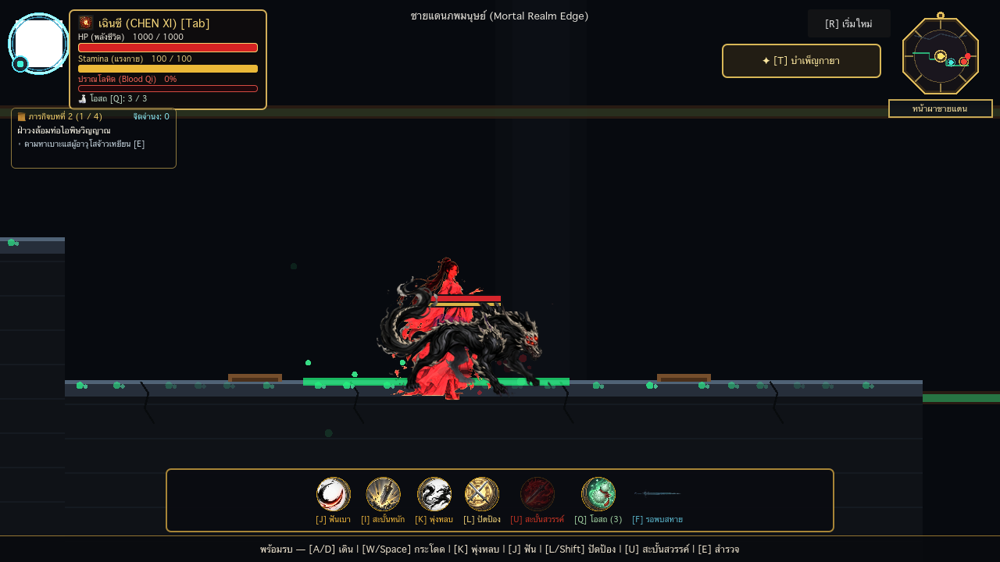

「 逆 天 改 命 · ฝืน ลิ ขิต เป ลี่ ยน ชะ ตา 」
รายงานข้อมูลแม่บทและสถาปัตยกรรมซอฟต์แวร์ครบทั้ง 12 หมวดหมู่ รวบรวมโดยสภา AI Agent 13 ตำแหน่ง และซีเนียร์วิศวกร (Poteto-Mode) ถวายแด่ พี่แจ็ค (Executive Producer) พร้อมให้เลือกสรรหมวดงานที่ต้องการลงมือทำเองได้ทันที!

คลิกเปิด-ปิด เพื่อดูรายละเอียดเชิงลึกของแต่ละหมวดหมู่
ครอบคลุมปรัชญา 'ฝืนลิขิตเปลี่ยนชะตา' (逆天改命), สี่ภพภูมิคนละมิติ (แดนมนุษย์, เซียน, มาร, เทพ - C-018), วงล้อชะตากรรมสวรรค์แตกสลายกลายเป็นกระบี่หัก (C-020), และเตากลืนชีวาสูบวิญญาณมนุษย์ 1,000 ดวง (C-013)
เจาะลึกปูมหลัง 6 ตัวละครหลัก: เฉินซี (จอมยุทธ์ปราณโลหิต), ไป๋เยว่หลิง (เซียนหญิงเหมันต์เล่นได้จริง), ซ่งเหริน (ศิษย์ยันต์มัสตาร์ด), เยี่ยซางเยี่ย (องค์ชายมาร), เทวราชอวี่หาน (เทพสงคราม) และ ผู้อาวุโสจ้าวเหยียน
กดปุ่ม [Tab] หรือ [C] สลับตัวละครได้อิสระ! เฉินซีเน้นฟันหนักและปราณโลหิตชาด ส่วนไป๋เยว่หลิงเน้นเพลงกระบี่หยกว่องไว, คอมโบกลางเวหา [W]+[J], ท่าปักพื้นน้ำแข็ง Frostfall Plunge [S]+[J] และค่ายกล 6 ทิศ [U]
ไม่ใช้ระบบ EXP ธรรมดา แต่อัปเกรดผ่าน 'แต้มจิตจำนง' (Will Points) แบ่ง 3 สาย: กายาสะท้านฟ้า (เพิ่ม HP/เกราะ), เพลงกระบี่สะบั้นฟ้า (เพิ่มพลังโจมตี/คริติคอล) และ จิตปฏิเสธสวรรค์ (ขยายหน้าต่าง Parry และ I-Frames)
บทที่ 1: ชายแดนมนุษย์ (9,060px) ผ่าน 5 โซนจากหน้าผา สู่ป่าไผ่ฝนพรำ สะพานศิลาโบราณ และหน้าเตากลืนชีวา | บทที่ 2: ความจริงใต้หอโอสถ (8,400px) ถ้ำหินธรรมชาติแตกลายงา กับดักท่อไอพิษ และหลุมหนามวิญญาณ
ขับเคลื่อนด้วย AI State Machine: อสูรเงา มีท่าก้าวขาวิ่ง 4 เฟรม, บอสเตากลืนชีวา (Phase 1 ดาบยักษ์ไฟร์คลีฟ / Phase 2 เพลิงผลาญคลั่ง) และ บอสเงาจิตผู้อาวุโสจ้าวเหยียน ทุกตัวมีท่าง้างเตือน (Telegraph) และหลอด Poise
ลายเส้นพู่กันหมึกดำตัดสีแดงชาดและหยกคราม ผสานดนตรีเครื่องสายจีนโบราณ (กู่เจิง, ขลุ่ยผิว) และกลองศึกออเคสตราเร่งเร้าในห้องบอส
Calligraphic HUD สำริดทองเหลือง พร้อมมินิแมปกระจกแปดทิศ (Bagua Mirror) สถาปัตยกรรม GDScript แยกโมดูลอิสระ รันเสถียรบน Mac M1 60 FPS
เซฟอัตโนมัติไฟล์ JSON (user://save_data.json) จดจำค่าสถิติและการอัปเกรด พร้อม Milestone การส่งมอบงาน 3 รอบตรวจรับ
คลิกสลับดูคุณสมบัติและท่วงท่าการต่อสู้



ภาพแคปเจอร์จริงจากการรันบนชิป Apple Silicon M1


